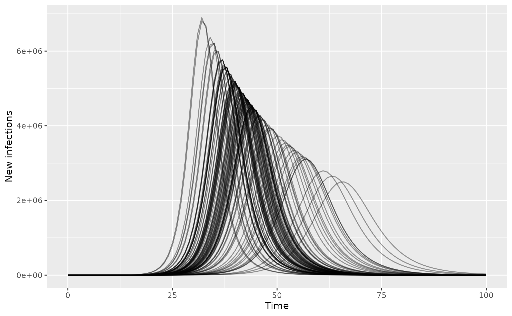

Modelling outcomes under uncertainty in infection parameters
Source:vignettes/infection_parameter_uncertainty.Rmd
infection_parameter_uncertainty.RmdThis vignette shows how to use daedalus to model outcomes under uncertainty in infection parameters. We focus on uncertainty in , which has a major effect on epidemic trajectories.
Load required packages including daedalus.
library(daedalus)
library(ggplot2)
library(dplyr)
#>
#> Attaching package: 'dplyr'
#> The following objects are masked from 'package:stats':
#>
#> filter, lag
#> The following objects are masked from 'package:base':
#>
#> intersect, setdiff, setequal, unionConsider an infection similar to 2009 influenza, with uncertainty in
the
.
We draw a set of 100
values from a normal distribution to parameterise 100
<daedalus_infection> objects, which can be passed as
a list to the function [daedalus_multi_infection()].
flu_2009 <- daedalus_infection("influenza_2009")
flu_2009_r0 <- get_data(flu_2009, "r0")
# draw samples
r0_samples <- flu_2009_r0 * stats::rnorm(100, 1, 0.1)
# view a histogram of samples
ggplot() +
geom_histogram(aes(r0_samples)) +
labs(
x = "R0 value",
y = "Count"
)
#> `stat_bin()` using `bins = 30`. Pick better value with `binwidth`.
# parameterise daedalus_infection objects
infection_list <- lapply(
r0_samples, \(x) daedalus_infection("influenza_2009", r0 = x)
)Run the model for the U.K. with the infection list passed as
infection. No mitigation strategies are applied.
# run model with 100 infection objects
output_list <- daedalus_multi_infection(
"GBR", infection_list,
time_end = 100
)
# get incidence data and plot epi curves
data_list <- lapply(output_list, get_incidence, "infections")
data_list <- Map(
data_list, seq_along(data_list),
f = function(df, i) {
df$param_set <- i
df
}
)
data <- bind_rows(data_list)
# plot curves
ggplot(data) +
geom_line(
aes(time, value, group = param_set),
alpha = 0.4
) +
labs(x = "Time", y = "New infections")